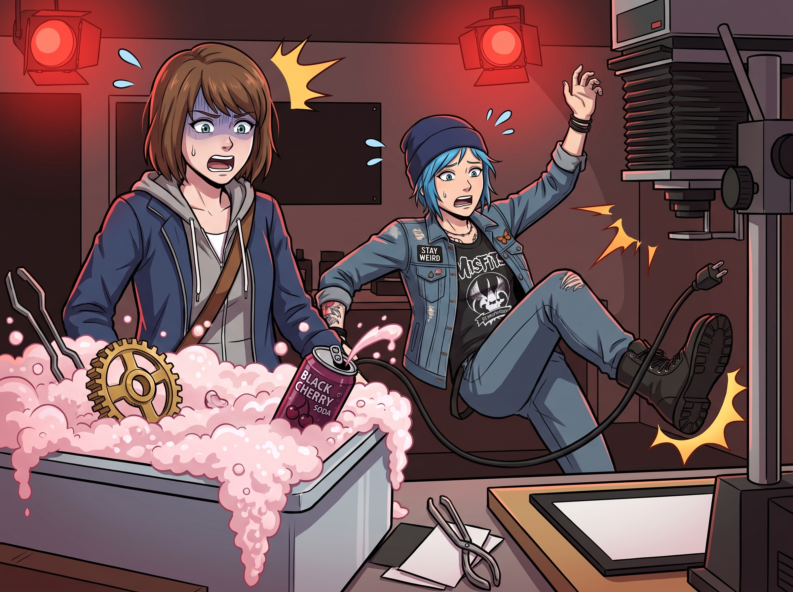
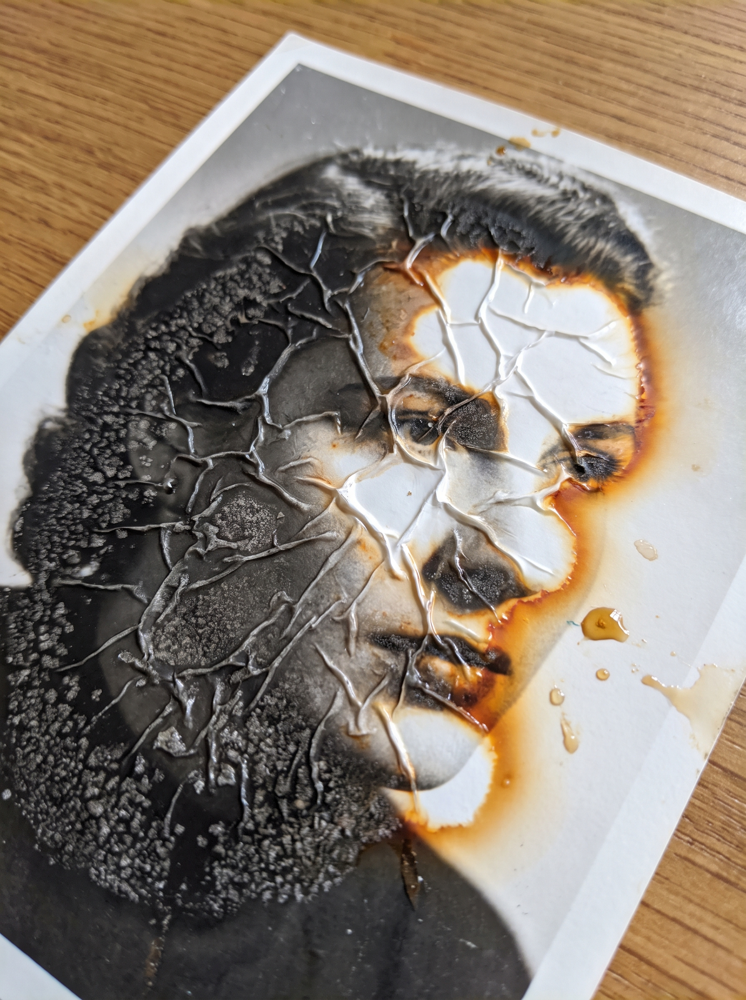
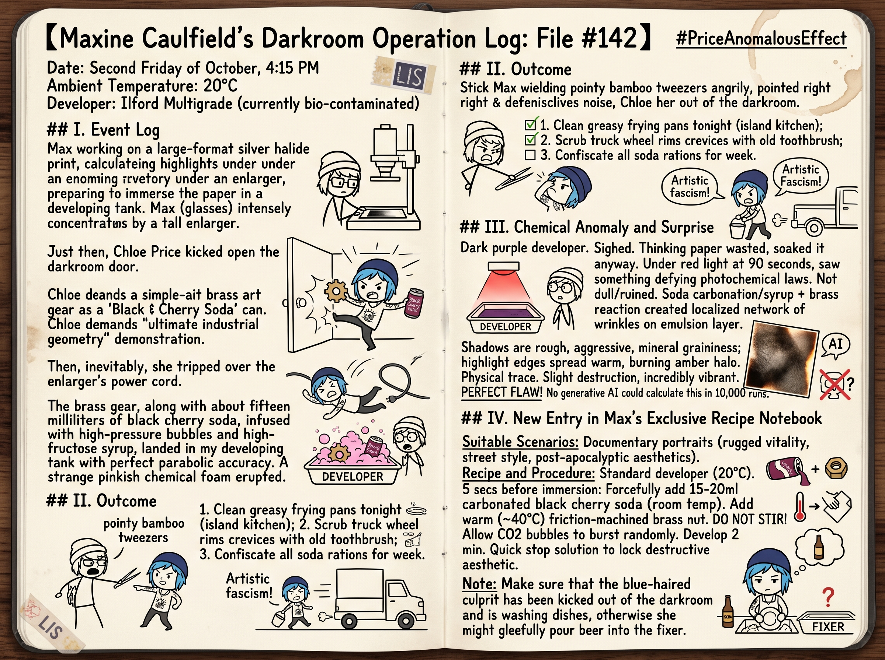

普萊斯異常效應



【Maxine Caulfield 的暗房操作日誌：卷宗 #142】
日期：十月第二個週五，下午 4:15 室溫：20°C 顯影液：Ilford Multigrade（目前已被生化污染）
一、事件記錄
這原本應該是一次完美的大畫幅銀鹽試相。我已經在放大機下精確計算了面部的高光分區，正準備將相紙滑入顯影槽。
就在這時，Chloe Price 踢開了暗房的門。她一手拿著剛用車床切削出來、還帶著溫度的黃銅齒輪，另一隻手拿著她那罐雷打不動的黑櫻桃汽水，非要給我展示所謂的「工業幾何學極致」。
然後，她不可避免地被放大機的電源線絆了一下。
那顆黃銅齒輪，連同大約十五毫升帶著高壓氣泡和高果糖漿的黑櫻桃汽水，以一個完美的拋物線，精準無誤地砸進了我的顯影槽裡。泛起一陣詭異的粉紅色化學泡沫。
二、處置結果
我當場拔下了竹製相紙鑷子，指著她的鼻子把她轟出了暗房。作為污染我神聖工作區的代價，我判處她：今晚清洗中島廚房的所有油膩平底鍋；用廢舊牙刷把皮卡車的四個輪轂縫隙全部刷一遍；沒收她本週剩餘的所有黑櫻桃汽水配額。
她一邊在門外抗議這是「藝術法西斯主義」，一邊乖乖提著水桶去洗車了。
三、化學異常與驚喜
看著那盆已經變成暗紫色的顯影液，我嘆了口氣，本著相紙已經曝光不能浪費的心態，還是把相紙泡了進去。
顯影時間到達九十秒時，我在紅光燈下看到了完全違背感光化學常理的一幕。
那不是預期中被糖漿毀掉的灰暗廢片。汽水裡的碳酸氣泡和高果糖漿，加上黃銅在顯影液中瞬間發生的微量金屬置換反應，居然在相紙的藥膜層上產生了一種極其罕見的局部網狀皺縮。
原本黑白分明的銀鹽相紙上，暗部呈現出了一種粗礪、充滿侵略性的礦石顆粒感；而在高光邊緣，竟然暈染開了一層極其溫暖、彷彿正在燃燒般的琥珀色暈影。
這種帶著輕微毀滅感、卻又無比鮮活的物理痕跡，是任何生成式 AI 跑一萬次代碼都算不出來的完美瑕疵。
四、Max 的專屬配方小本本新增條目
配方代號：普萊斯異常效應
適用場景：想要表現粗獷生命力、街頭感或廢土風格的紀實肖像。
配方與操作步驟： 準備標準濃度的顯影液（20°C）。在相紙入水前五秒，強行加入十五至二十毫升常溫黑櫻桃汽水，必須是帶氣的。投入一顆剛經過機械摩擦、表面溫度約四十度的黃銅螺母。不要均勻攪拌，讓碳酸氣泡在相紙表面隨機炸裂。顯影兩分鐘後迅速進入停影液，鎖死這種破壞性美學。
備註：使用此配方時，務必確保那個藍頭髮的肇事者已經被趕出暗房並正在洗碗，否則她會得意忘形地往定影液裡倒啤酒。